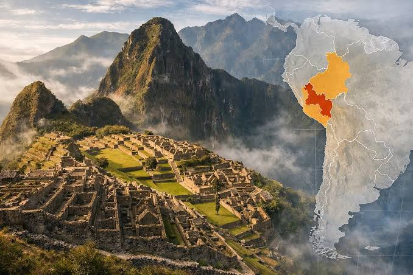

Objective: I can discover historical buildings/landmarks in Spanish speaking countries.
There are many historical landmarks across the 21 Spanish speaking countries and they reflect vastly different eras, architecture, and cultural origins. In the West, Mesoamerican and Andean nations show lots of pre-Columbian stone monuments just like Mexico’s step-pyramids at Chichén Itzá and Peru’s landmark Machu Picchu which was built way before Europeans found Peru. Then as we travel to the Caribbean and South American countries like Cuba and Colombia we see landmarks that incorporate colonial military fortresses, cobblestone plazas, and Baroque cathedrals built to guard trade routes. And in Spain they blend ancient Roman, Islamic, and Mediterranean architecture like La Alhambra, and La Sagrada because of their unique history. Use this article and this article to help you research historical places in your chosen country.
